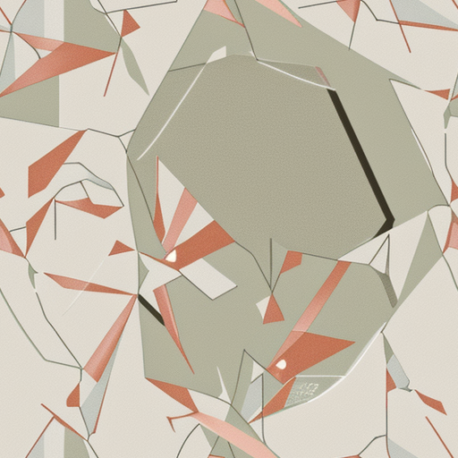

Who is this for?
Anyone who wants to get started with generative AI
What do I need?
(Windows/Linux)
GPU (4GB+ VRAM)
RAM (12GB+)
20GB+ space
What do I need?
(MacOS)
Apple Silicon (M1, M2, M3)
RAM (12GB+)
20GB+ space
The plan for this stream
- Install Stability Matrix
- Learn how to use Stability Matrix
- Install ComfyUI
- Learn how to use ComfyUI
- Generate the image from the thumbnail
Install Stability Matrix
Search for "Stability Matrix"
or click on this link
Creating a prompt
Reference image

(Source)
Image Captioning
Use a captioning tool such as JoyCaption
sepia tone, close-up of a person's head and shoulders, wearing a hooded cloak with the hood up, covering their face, only the eyes visible, soft fabric texture, monochromatic, minimalist, high contrast, no background, focus on the hood and face, dramatic lighting, vintage feel, mystery, intrigue, subtle folds in the fabric, serene expression, neutral colors, fine art photography.
Using AI to generate prompts
Install Ollama and run the following line in your terminal/command line (model information):
ollama run impactframes/llama3_ifai_sd_prompt_mkr_q4km
Or create/download a batch file that runs the command for you (Windows only):
prompt-generator.batImage to image generation
Visit mueseo.app
Using custom workflows
The Miriam and Ira D. Wallach Division of Art, Prints and Photographs: Print Collection, The New York Public Library. "Masks and hats" The New York Public Library Digital Collections. 1688. https://digitalcollections.nypl.org/items/82093a00-5535-0135-dab1-03ff7afede6c
Seamless Tile Generator
Image to video workflow
Visit the Heibara AI Blog